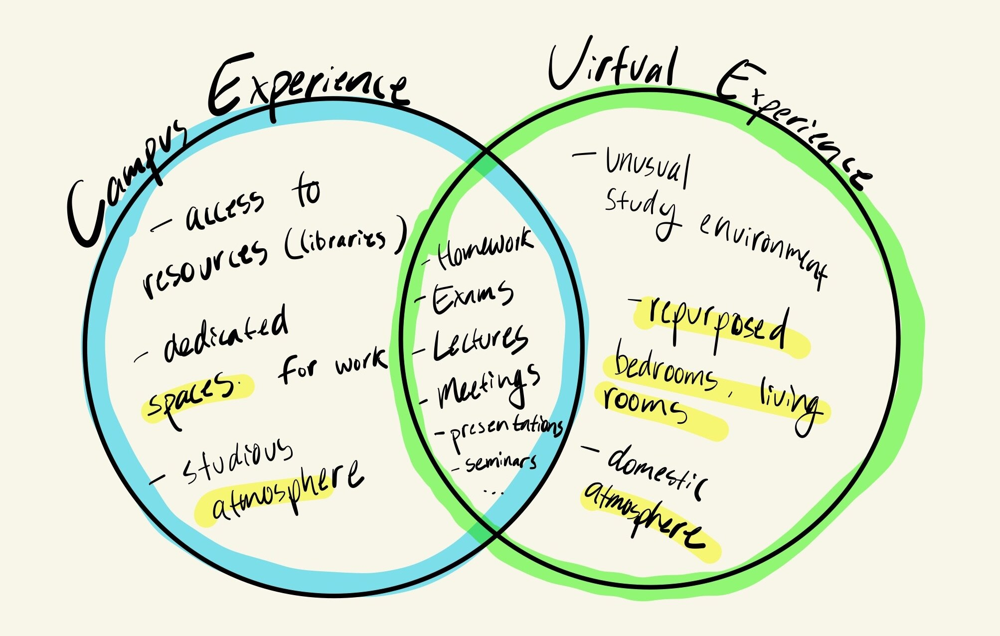

Ambient
Covid Design Challenge
April 2020
Due to COVID-19, in March of 2020, students everywhere were forced to disperse across the globe and leave their campuses, the Covid Design Challenge was conceived to gain ideas on how to maintain our community through virtual campus experiences. The three day design challenge was meant to address challenges to our mental health, motivation, concentration and resources as students.
"In light of recent events, most of the normal campus activities have been suspended,
but we can still maintain our community through virtual campus experiences."
- From Virtual Campus Design Challenge prompt

At the outset, I was inspired by ambient loops that I often listened to that simulated the experience of
being somewhere I wasn’t. I liked to listen to the ones where I was by the beach, listening to the crashing
of waves or in a house that was experiencing heavy rain. The goal of these ambient loops is to soothe the
user as well as provide the user the ability to simulate a space that is conducive to productivity.

I began by cataloging various soundscapes around campus from my experience. I was able to organize and
create descriptions of what soundbites would be prevalent in each of the spaces. For example, in one of my
favorite outdoor study spots on the lawn in front of a popular library, it would be common to hear others
running on grass, children playing and friends chattering. These soundscapes would help me to understand
the different atmospheres that could be provided by a physical campus.
The final design was a web application that was functional and allowed the user to choose from different
spaces of different categories and listen in on a loop of ambient audio that simulates the atmosphere of
that space. The application also appealed to those who hold certain spaces very dear to their hearts by
allowing them to submit feedback for spaces they didn’t feel was quite right as well as the ability to
create a space with precise soundbites and elements in the looping audio.